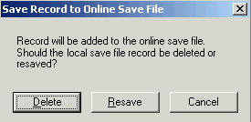

Contact
Princeton University Cataloging Documentation
Contact |
Princeton University Cataloging Documentation |
NACO: special
Return to: NACO main Name/Title headings |
Using OCLC Connexion for NACO work Procedure: 1) Open Connexion (double-click on desktop icon) 2) Create a new record by clicking on:
3) Type in record 670(s), 1xx, and 4xx(s).
4) F4 to save the record to a local file, or go to Action menu and choose Save record to local file When your records are completely done and ready to submit to the Authorities Committee, you need to print them, and send them to the online save file. Records are sent to the online save file by logging on to the server using the FileLogOn button. If the records have already been printed, highlight them in the list, then choose "Save record to online file" from the Action menu. If the records have not been printed, open the record you are ready to submit, print it, then choose Save Record to Online File in the Action menu. When you get the box below, choose Delete.  How to: Add a new field Position cursor in line above where you want the new line, then press Enter Add the delimiter symbol ctrl+d Delete a field Right-click on field and choose Delete Delete a record Retrieve the record or highlight the record in a list, choose Delete Record from the Action menu or use the button. Get MARC info. for a field/subfield Right-click on a field and choose MARC Field Help. Indicate Can CIP
Make a record non-unique In addition to the additional 670s, change the value of the fixed field Name to "b" Make a record provisional Change the Auth Status to "c" Move a field
Reformat your record
Search for records in your local save file
To send a record to the online save file
When done, remember to log off the server (using FileLogOff button) Navigation: End -- move to end of the field Ctrl+End -- move to end of record Home -- move to beginning of the field Ctrl+Home -- move to beginning of the record NOTES: If you close Connexion without saving a record, it will not warn you, your record will just disappear! Connexion software can be open without being connected to the server, so the software can be left open all day. Connect to the server only when sending finished records to the online save file. Local save file numbering is unusual--it will fill in gaps left by records that have been sent to online save file. If you want to see your records in the order in which you created them, click on the Date/Time Added column to sort your records. You can tell you are logged on by the countdown clock at the bottom of the screen. You can use "My Status" to include notes to yourself about a particular record. For example, if you are waiting for some info. from the EA library, you can add a status "sent to EA 3/15/05, waiting for reply. |
| ©2008 Princeton University Last Modified 04/08/2005 |